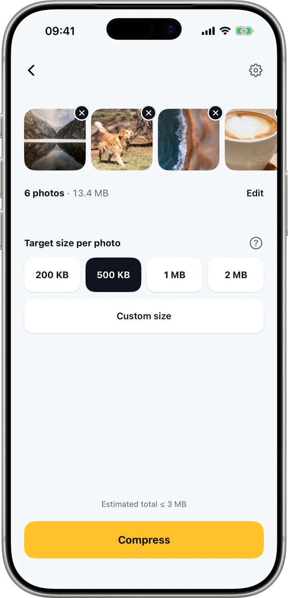
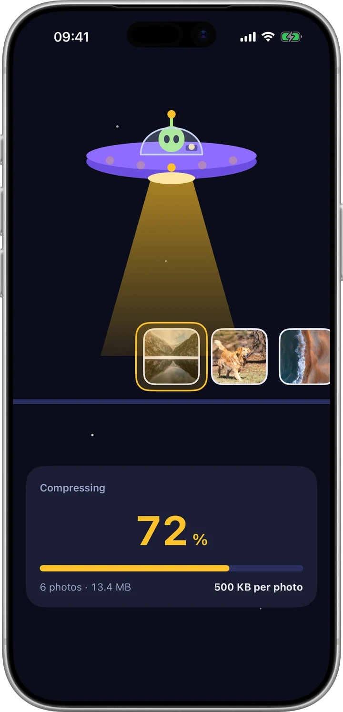
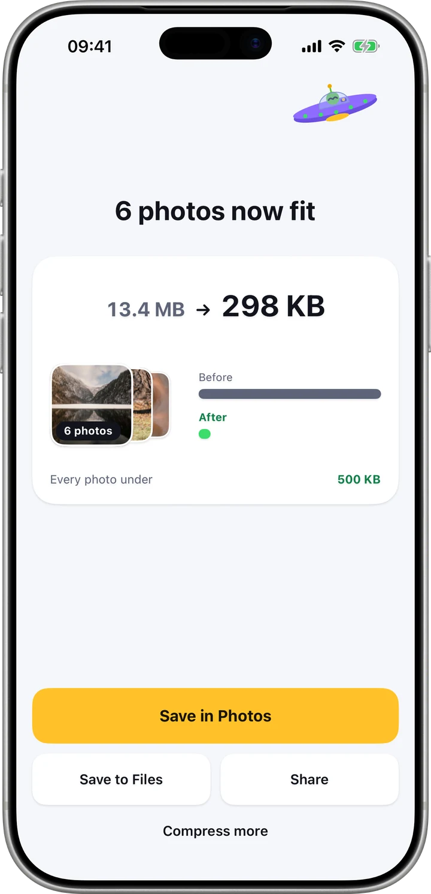

Shrink right from Photos
Shrink lives in the share sheet. Select photos in the Photos app, tap Share, choose Shrink. No detour through the app.
That “file too large” message? Pick your photos, set a size limit, and Shrink makes every one fit under it.
3 free exports. One-time unlock. No subscription.

A form asks for 500 KB, so you choose 500 KB. No quality slider, no guessing. The limit is a maximum for each photo.
Tap your limit for a short guide. Need a custom size?

Tap Compress and the saucer goes over every photo in the batch, up to 20 at a time. Shrink balances quality and dimensions until each one is under your limit.

Same photos, a fraction of the file size. Save them to Photos or Files, or share them straight to the app that was complaining.
An example with six sample photos. Results depend on the photo and the limit.
Shrink lives in the share sheet. Select photos in the Photos app, tap Share, choose Shrink. No detour through the app.
Compression runs on your iPhone. No photo leaves the device, there is no account, and photos stored on the phone can be compressed offline.
A dark cockpit and a light one. Shrink follows your iPhone, or you pin the theme you like.
Beam, Classic or Saucer, each with dark and tinted versions.
Short, practical answers for upload limits and lighter attachments.
Compress a photo to a 200 KB maximum on iPhone.
Read the guide →500 KB · Forms and listingsMake an iPhone photo fit a 500 KB upload limit.
Read the guide →1 MB and 2 MB · Larger uploadsReduce a photo to 1 MB, or use 2 MB when more detail is allowed.
Read the guide →Batch · Up to 20 photosOne limit, applied to every photo in the batch.
Read the guide →Troubleshooting · Upload errorsCheck file size, format, dimensions and the selected copy.
Read the guide →Email · Smaller attachmentsMake iPhone photos small enough to attach and send.
Read the guide →New to compression? Start with the iPhone photo-size guide
What you may want to know before your first export.
Choose your photos in Shrink, set a maximum size, then tap Compress. Review the result and save or share the smaller copy.
Read the guide
Yes. Both sizes are built-in presets. Each sets a maximum per photo; the final file can be smaller. Check any separate format or dimension requirements before uploading.
Read the guide
Select the 1 MB preset and compress. For a different limit, use 2 MB or Custom Size. A strict upload boundary may need a little margin below the stated limit.
Read the guide
Yes, up to 20 photos per batch. Your chosen maximum applies to every photo individually, so the combined batch can exceed that size.
Read the guide
It can. Shrink adjusts quality and, when needed, dimensions to fit your limit. Use the largest permitted target and review important detail. Photos already below the target are left unchanged.
Read the guide
No. Photo compression happens on your iPhone. Locally available photos can be compressed offline. Purchases and restoring access may require a connection.
Read the guide
The form may also require a particular format, dimensions, or a combined size limit. Confirm you selected the exported copy, then check the full upload requirements.
Read the guide
Your first three exports are free. A one-time purchase unlocks unlimited compression, with no subscription and no ads. Requires iPhone with iOS 26 or later.
Read the guide
Your first three exports are free. After that, one purchase unlocks unlimited compression. You’ll see the price for your country in the app.
Free to download · iPhone with iOS 26 or later